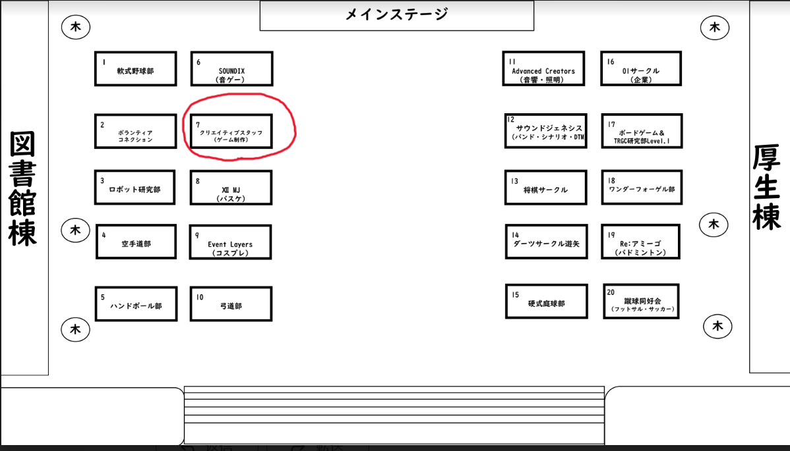

更新日： 2024年 3月 24日
2024年4月2日の新入生勧誘会のお知らせ

こんにちは、こんばんは、クリエイティブスタッフです。まずは新入生の皆様ご入学おめでとうございます。 新入生の皆様はきっと憧れのキャンパスライフに思いを馳せて、胸を踊らせていることでしょう。さてそんな中、4月2日にはサークルの新入生勧誘会があります。そしてこの新入生勧誘会には我々クリエイティブスタッフも出展します。 ブースの場所に致しましては研究棟に向かって右側の図書館棟側手前（画像の赤線で囲まれた所）になります。
また、ブースではビラ配りの他に、サークル説明と質疑応答、自作ゲームの試遊、サークル説明会の日程告知などを予定しております。 興味がある方は是非ブースまで足をお運びください。
以上クリエイティブスタッフから2024年新入生勧誘会のお知らせでした。
またね